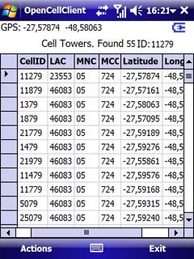
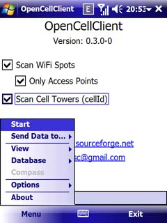

| Início | Notícias | Ajuda | Suporte | Download | Licença | Código | Alterações | Tarefas | Doações |
|
Após inicar o OpenCellClient você poderá começar a usá-lo imediatamente. Não há grandes necessiades de configuração. Basta acionar
a opção Actions/Start. O aplicativo irá ligar o receptor GPS e buscará os códigos da torre a qual está conectado no momento. Essa busca por torres se derá de tempos em tempos. Você poderá alterar essa opção para que a torre seja verificada a cada 1, 5, 10, 30 ou 60 segundos, sendo que o padrão é 5 segundos. O serviço OpenCellID.org exige uma chave para cada usuário enviar informação de torres. Este aplicativo possui uma chave interna, mas você poderá adiquirir uma chave própria aqui. Anote a chave e informe no menu Actions/Set OpenCellId Key/Use Your Own Key. Informe sua chave e você poderá utilizar os demais serviços fornecidos pelo OpenCellID, como lista de torres enviadas por você ou exclusão de torres. Quais são as informações coletadas pelo OpenCellClient? - CellID: Código da torre; - LAC: Local Area Code, ou Código da Área Local; - MNC: Mobile Network Code, ou Código da rede móvel; - MCC: Mobile Coutry Code, ou Código Móvel do País. |
 |
Após coletar os dados você poderá desligar o aplicativo sem o risco de perder as informações, pois as mesmas são armazenadas localmente.
Depois, usando sua conexão com a internet preferida, você poderá usar a opção Actions/Send to OpenCellID para que os dados das torres sejam transferidas para o serviço na web.
Opções
|
Existem algumas poucas opções no menu principal: - Start/Stop: Esta é a principal opção do menu. Use-a para (surpresa!) iniciar ou parar a pesquisa por torres de celuar e suas coordenadas. O dispositivo irá ligar o GPS e pesquisará de tempos em tempos pelas torres conectadas. Caso a torre não exista na base de dados ela será adicionada com ou sem informação de coordenadas. Mas porque sem coordenadas? Apenas para deixá-lo saber que foi encontrado uma nova torre, mas o sinal de GPS ainda não é válido. Quando o seu dispositivo retornar para esta torre e o sinal de GPS estiver OK, então as coordanadas serão armazenadas. - Send to OpenCellID: Esta opção conectará no OpenCellID e enviará todas as informações que seu dispositivo coletou. Note que apenas as torres com coordenadas e marcadas com um "Y" na coluna "new" serão enviadas. Esta coluna "new" exibe as torres que não foram enviadas ainda. Você verá na janela principal uma barra de progresso com a indicação de quantas torres você já enviouo e quantas faltam para enviar. |
 |

|
- View/Cells not sent: Esta opção permite que você veja quais torres você ainda não enviou para
OpenCellID. - View/All cells: Esta opção permite que você veja todo o histórico de torres coletadas. - View/List from OpenCellID: Esta opção não funciona por padrão. Você precisa criar sua chave de acesso no OpenCellID e digitá-la na opção Option/Set OpenCellID Key descrita abaixo. Para criar sua chave de acesso, por favor clique aqui e siga as instruções. Você receberá sua chave em seu e-mail. Após esta configuração esta opção ficará disponível. Quando acionada será realizada uma pesquisa em OpenCellID e você verá todas as coordenadas que você já enviou. - Main screen: Esta opção apresenta a tela principal do programa. |
|
- Database/Backup: Exporta todas as informações do banco de dados para um arquivo local. É particularmente útil quando você precisa
aplicar um hard reset em seu dispositivo ou decide trocá-lo por um novo. - Database/Restore: Importa informações a partir de um backup externo. Se as informações conflitarem, prevalecerá a que já estiver armazenada no banco de dados do dispositivo. - Database/Clear entire history: Use essa opção com cautela. Quando você acionar essa opção todas as informações do banco de dados serão apagadas. |

|

|
- Option/Debug mode: Ao marcar essa opção o programa irá gravar um arquivo chamado opencellclient.txt com
várias informações para correção de erros. Se você encontrar algum comportamento não usual no aplicativo, por favor
marque essa opção, repita a ação para que o problema ocorra novamente e envie o arquivo anexado para suporte. - Option/Auto send data to OpenCellId: Se esta opção estiver marcada, sempre que uma nova torre for encontrada suas informações serão enviadas imediatamente para OpenCellID. Certifique-se de possuir um bom plano de dados antes de marcar essa opção. - Option/Prevent sleep mode: Marque essa opção caso você não queira que o dispositivo entre em hibernação automaticamente após o período definido de inativiadade nas configurações, durante a pesquisa por torres de celular. - Option/Reset GSM before start: Se esta opção estiver marcada, quando você clicar em Actions/Start, o rádio GSM do seu aparelho irá desligar e ligar novamente. Alguns dispositivos necessitam dessa ação para coletar informações corretamente. - Option/Reset device before start: Se esta opção estiver marcada, quando você clicar em Actions/Start, seu dispositivo será reiniciado. Após a inicialização a aplicação irá iniciar automativamente. Alguns dispositivos precisam ser reiniciados para coletar informações corretamente. |
| - Options/Set Interval: Você pode definir o intervalo em segundos entre uma verificação e outra das torres de celular. |

|

|
- Option/Set OpenCellID Key: Esta opção lhe permite escolher entre duas alternativas: usar a chave de autenticação interna do OpenCellClient ou usar a sua própria chave.
A chave interna é usada por padrão, mas você pode criar sua própria chave de autenticação de digitar o código aqui. Para criar sua chave de autenticação vá para a página de registro do OpenCellID e faça seu registro. Você receberá a chave de autenticação por e-mail. Quando você utiliza sua própria chave de autenticação a opção View/List from OpenCellID ficará disponível para você. Certifique-se de digitar a chave corretamente. 
|

|
Contato: joubertvasc@gmail.com |